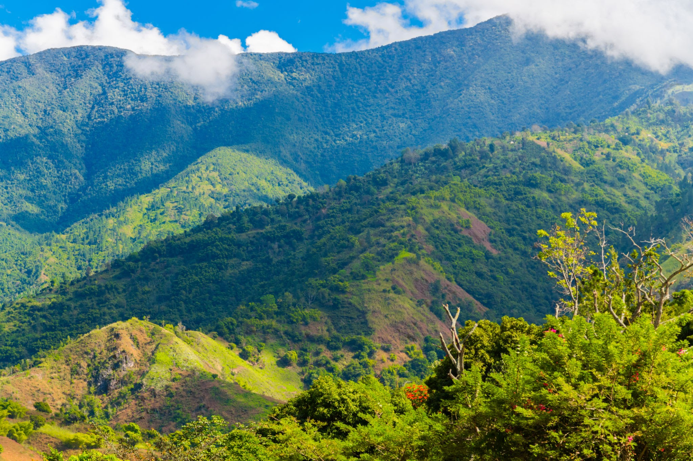
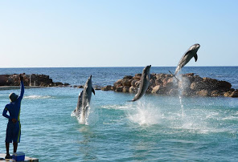

Jamaica, a Caribbean island nation, has a lush topography of mountains, rainforests and reef-lined beaches. Many of its all-inclusive resorts are clustered in Montego Bay, with its British-colonial architecture, and Negril, known for its diving and snorkeling sites. Jamaica is famed as the birthplace of reggae music, and its capital Kingston is home to the Bob Marley Museum, dedicated to the famous singer.
What are you looking for?
Mountains, Parks and Beaches



Blue Mountains Dolphin Cove Ocho Rios Dunn's River Falls & Park
House and Museums


Rose Hall Great House Bob Marley Museum Mayfield Falls
Tips of visiting Jamaica
- The tap water in Jamaica is safe to drink.
- Getting around Jamaica is expensive.
- You can use U.S. dollars in Jamaica.
- Homophobia in Jamaica is rampant.
- Marijuana in Jamaica is illegal.
- Tourist areas in Jamaica feel safe.